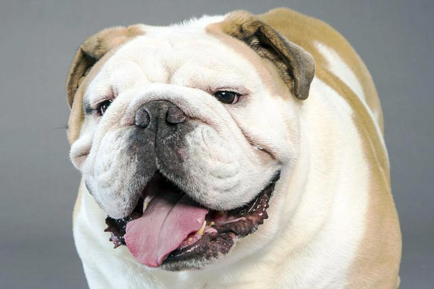
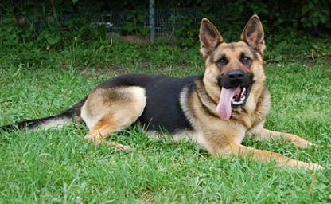
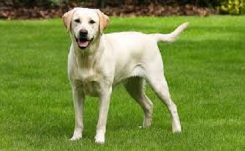
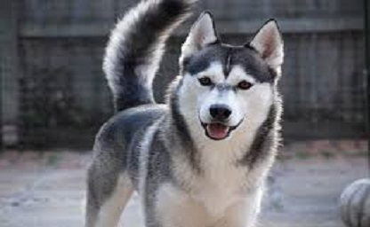
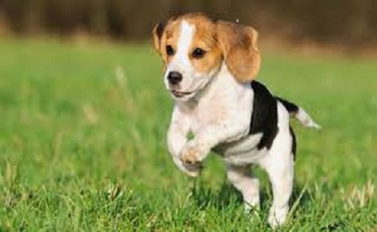
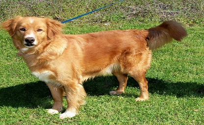

Bulldog
The Bulldog is a medium-sized breed of dog commonly referred to as the English Bulldog or British Bulldog. Other scent-hound
breeds include the Small Greek Domestic Dog, Irish Wolfhound, Bluetick Coonhound, Finnish Lapphund, and the Basset Hound. The
Bulldog is a muscular, hefty dog with a wrinkled face and a distinctive pushed-in nose.

German Shepard
The German Shepherd is a breed of medium to large-sized working dog that originated in Germany. The breed's officially recognized
name is German Shepherd Dog in the English language (sometimes abbreviated as GSD). The breed is also known as the Alsatian in
Britain and Ireland. The German Shepherd is a relatively new breed of dog, with their origin dating to 1899.

Labrador Retriever
The Labrador Retriever, also Labrador, is a type of retriever-gun dog. The Labrador is one of the most popular breeds of dog in the
United Kingdom and the United States. A favourite disability assistance breed in many countries, Labradors are frequently trained
other official agencies. They are prized as sporting and hunting dogs.

Siberian Husky
The Siberian Husky is a medium size working dog breed that originated in north-eastern Siberia, Russia. The breed belongs to the
Spitz genetic family. It is recognizable by its thickly furred double coat, erect triangular ears, and distinctive markings.

Beagle
The beagle is a breed of small hound, similar in appearance to the much larger foxhound. The beagle is a scent hound, developed
primarily for hunting hare. With a great sense of smell and superior tracking instinct, the beagle is employed as detection dog
for prohibited agricultural imports and foodstuffs in quarantine around the world. The beagle is intelligent but single-minded.
It is a popular pet due to its size, good temper, and lack of inherited health problems.

Golden Retriever
The Golden Retriever is a large-sized breed of dog bred as gun dogs to retrieve shot waterfowl such as ducks and upland game birds
during hunting and shooting parties, and were named 'retriever' because of their ability to retrieve shot game undamaged. Golden
Retrievers have an instinctive love of water, and are easy to train to basic or advanced obedience standards. Golden Retrievers are
well suited to residency in suburban or country environments.